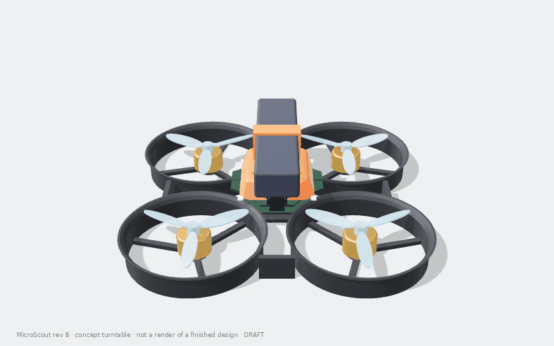
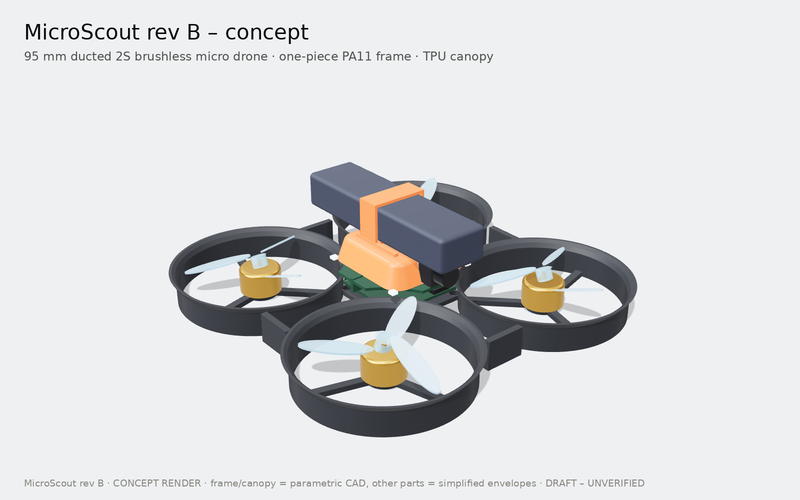
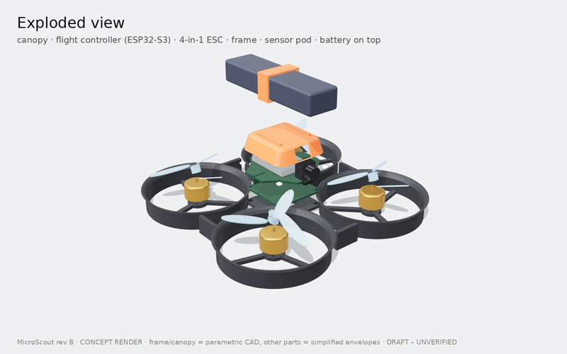
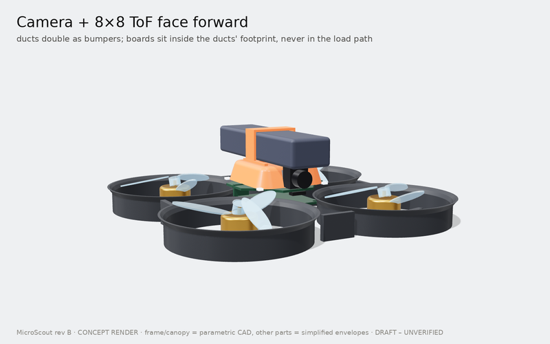
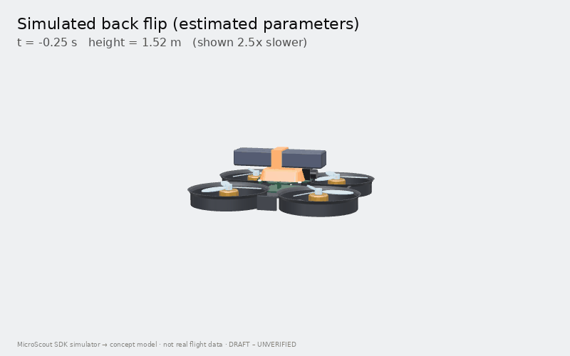
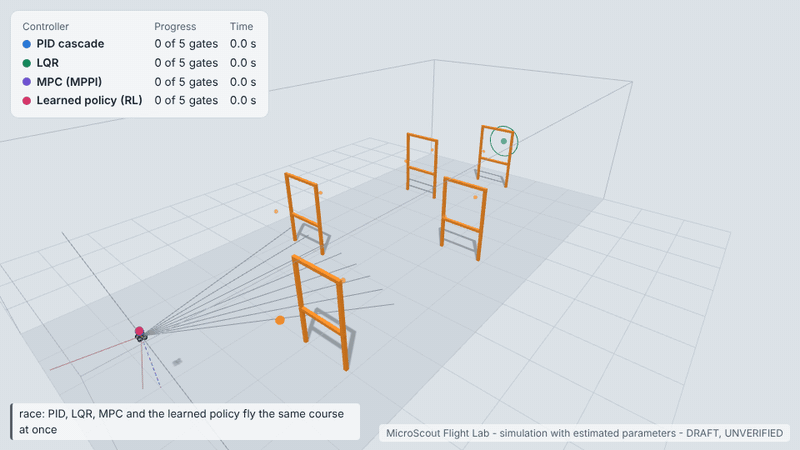
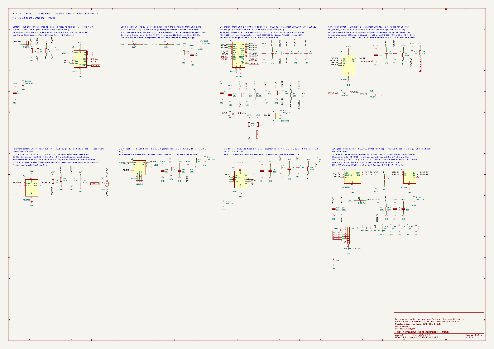
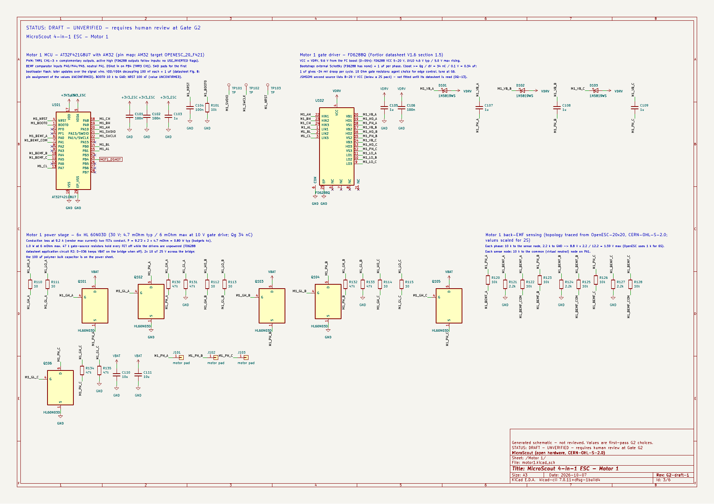
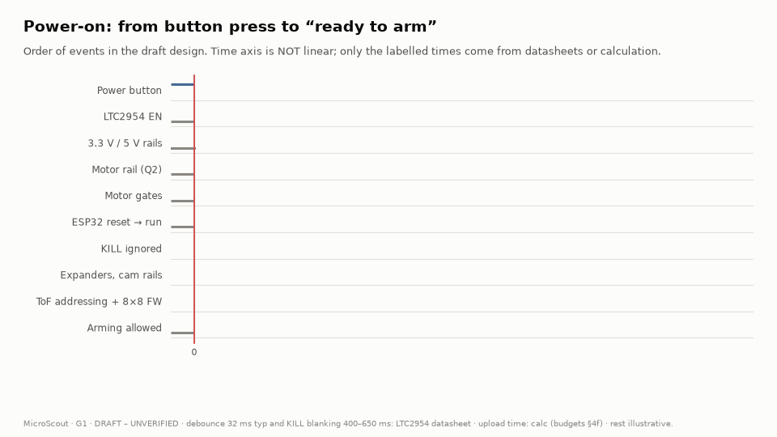
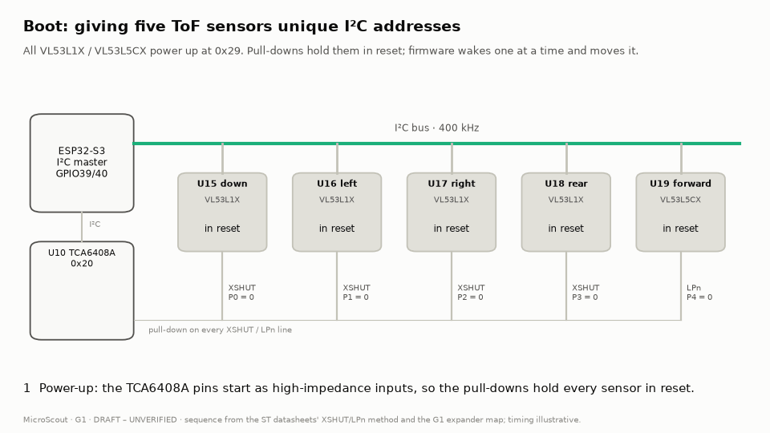

Open-source micro drone · G1 approved · Gate G2 schematics draft
A 95 mm, 2S brushless ESP32-S3 quadcopter designed to be quick, to flip and to survive crashes: a one-piece ducted nylon frame is meant to protect soft-mounted electronics, and a Python SDK flies it - in a simulator today, on the drone later. This page shows the Gate G1 rev B draft and lets you change the assumptions.

Drag to orbit, scroll or pinch to zoom. The frame and canopy are parametric CAD; motors, props, battery, boards and sensors are simplified envelopes. The flights are replayed from the SDK simulator with estimated parameters - not real flight data.




Any ExpressLRS radio, or a phone on the drone's Wi-Fi (app planned for M8).
| Mode | Sticks mean | It helps by |
|---|---|---|
| Beginner | speed | holding height and position, stopping before walls |
| Sport | tilt angle | levelling itself, holding height |
| Acro | rotation rate (1000 °/s) | staying out of your way - flips, rolls |
One-button flips in any mode above 1 m. Kill switch, link-loss landing, low-battery landing and a 3 m ceiling are built in. Flying guide →
pip install -e software/microscout_sdk
import microscout
with microscout.connect("sim") as drone:
drone.takeoff(1.0)
drone.move(forward=1.0)
drone.flip("back")
drone.land()
Same API for the simulator now and the drone later. Drop down to rates, attitude or velocity setpoints and run your own PID, LQR or MPC at 100 Hz. Programming guide →

Fly MicroScout yourself in your browser (keyboard, gamepad or touch), race four autopilots through obstacle courses, and train it with reinforcement learning while you watch. Simulation with estimated parameters. Open the Flight Lab · How it works
The same hover model as budgets.py. Start values are the current estimates (G1 model, updated at G2); move them to see how much margin each assumption buys. Hover time = capacity × HV derate × usable fraction ÷ (motor current + electronics current).
Generated from Python (tools/sch) as KiCad 7 files: flight controller (4 sheets), 4-in-1 ESC (5 sheets) and the ToF satellite boards. The agent's checks report 0 errors and KiCad netlists identical to the source; KiCad's own ERC and a human review are still to come. Click a sheet for the full PDF.


G2 review package → reference-design comparison, protection summary, pull-ups and strapping, costed BOM.
35 of the 36 GPIOs on the ESP32-S3-WROOM-1-N8R2 module are used; GPIO1 is spare. Hover or tab through the pins for details; the chips filter by function. Pin order follows the module (1–14 left, 15–26 bottom, 27–40 right); the drawing is not to scale.
Strapping pins (◆) decide how the chip boots, so the circuits on them were chosen to give the right level at reset.
Two short animations of the planned start-up behaviour. They illustrate the draft design; the real behaviour is checked on the bench, props off, at Gate G6.


Generated by tools/viz/figures.py from the same data as this page, in light and dark versions.
Decisions the owner makes before the schematic starts. The recommendation is the drafting agent's.